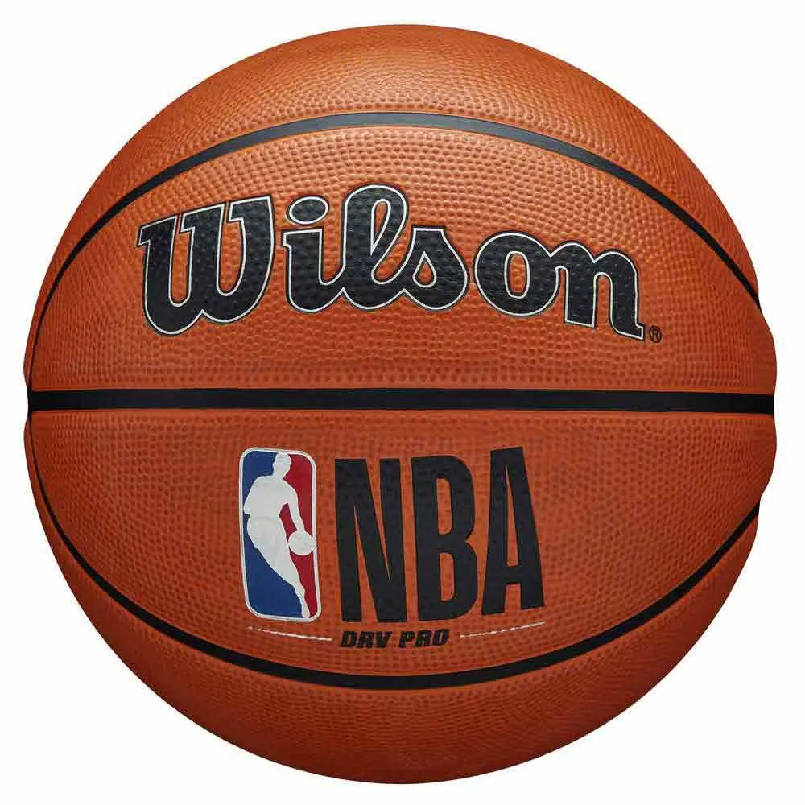

Los campos de entrenamiento de la NBA abrieron el 29 de septiembre para la mayoría de los equipos. Los Sixers completaron su Media Day con LeBron James, Joel Embiid, Jaylen Brown, Tyrese Maxey y VJ Edgecombe como los cinco jugadores con rol definido antes de abrir el campo. Las primeras imágenes del entrenamiento han circulado durante las últimas dos semanas en redes sociales, con LeBron James y Joel Embiid trabajando pick-and-roll juntos en sesiones de práctica que generaron millones de visualizaciones en X.
El Opening Day es el 20 de octubre, con los Knicks recibiendo a los Sixers en el Madison Square Garden para la ceremonia de entrega de anillos de campeón — la primera de la historia de la franquicia neoyorquina. Es el escenario más cargado de simbolismo que podría diseñar la NBA: los campeones reinantes elevando su banner al techo del MSG mientras LeBron James, que según el propio agente habría fichado por los Knicks si no hubieran ganado el título, entra de visitante al pabellón con los colores de los Sixers.
Los Spurs viajan a París el 14 de enero y a Manchester el 17 de enero para los NBA International Games, ambos contra los New Orleans Pelicans. Es el primer viaje europeo de Wembanyama como profesional, y el interés en el Viejo Continente ha generado una demanda de entradas que superó cualquier expectativa. Las entradas para ambos partidos se agotaron en minutos. Las apuestas europeas sitúan al joven francés como el principal candidato al MVP de la temporada regular en su tercer año.
El panorama competitivo de la temporada que arranca en 8 días es el más rico en narrativas desde hace años: Knicks campeones defensores con el mismo núcleo, Sixers con el superteam más hablado del verano, Spurs de Wembanyama con la revancha de las Finales como combustible, Thunder de SGA buscando volver a las Finales y los Celtics en reconstrucción silenciosa. La pretemporada ha confirmado que los Sixers tienen los problemas de cohesión esperados pero que cuando fluye el juego entre LeBron y Embiid es algo que la liga no ha visto antes. Ocho días.